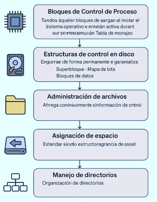

La implementación dentro de su organización tiene los siguientes niveles con características y funciones específicas:
-
Los Bloques de Control de Proceso (BCP) son estructuras que se cargan al iniciar el sistema operativo y permanecen activas durante su ejecución, incluyendo elementos como:
Tabla de archivos abiertos, Tabla de inodos y Tabla de montajes. -
Estructura de control en disco, dentro de este espacio de almacenamiento se ubican de forma permanente y garantiza la persistencia de los datos entre los que se encuentran:
Superbloque, Mapa de bits y Bloques de datos. - Administración de archivos, gestión documental y administración de datos, esto se genera cuando un archivo se apertura y el sistema operativo realiza un traslado de información al control de inodo desde el dispositivo físico a la memoria principal, con ello se actualiza la tabla de archivos abiertos, esto ayuda a mejorar la velocidad de acceso y la reducción de operaciones de entrada y salida en los discos de almacenamiento.
- Asignación de espacio, sirve para la asignación de bloques en el disco que permiten el almacenamiento de los archivos en una forma contigua y enlazada buscando la eficiencia de acceso y evitando la fragmentación.
- Manejo de directorios, Los archivos se organizan de forma jerárquica dentro de directorios, que contienen referencias tanto a otros archivos como a subdirectorios.

Figura 29. Implementación del sistema de archivos. Adaptado de Conceptos de sistemas operativos (10.ª ed.) por Abraham Silberschatz, Peter B. Galvin y Greg Gagne, 2022, Wiley.